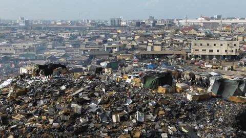
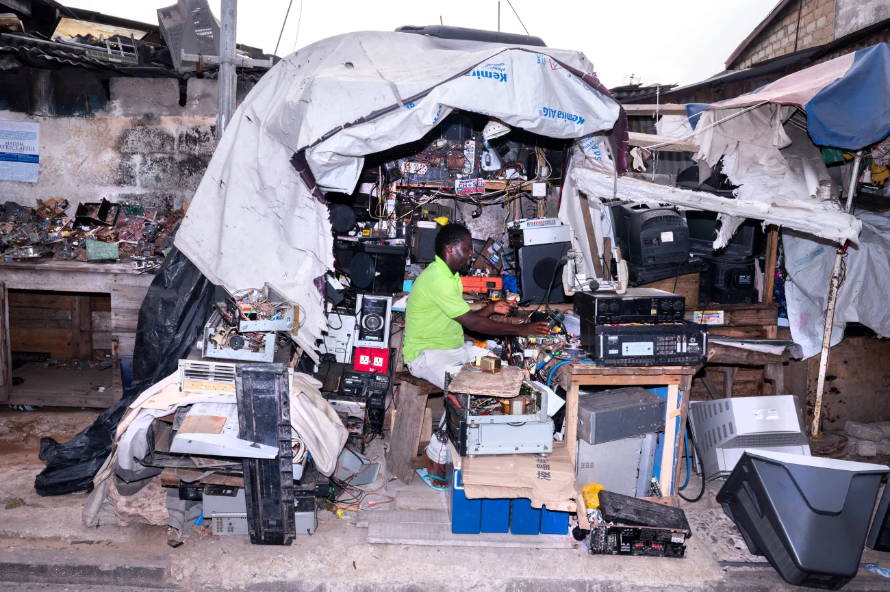
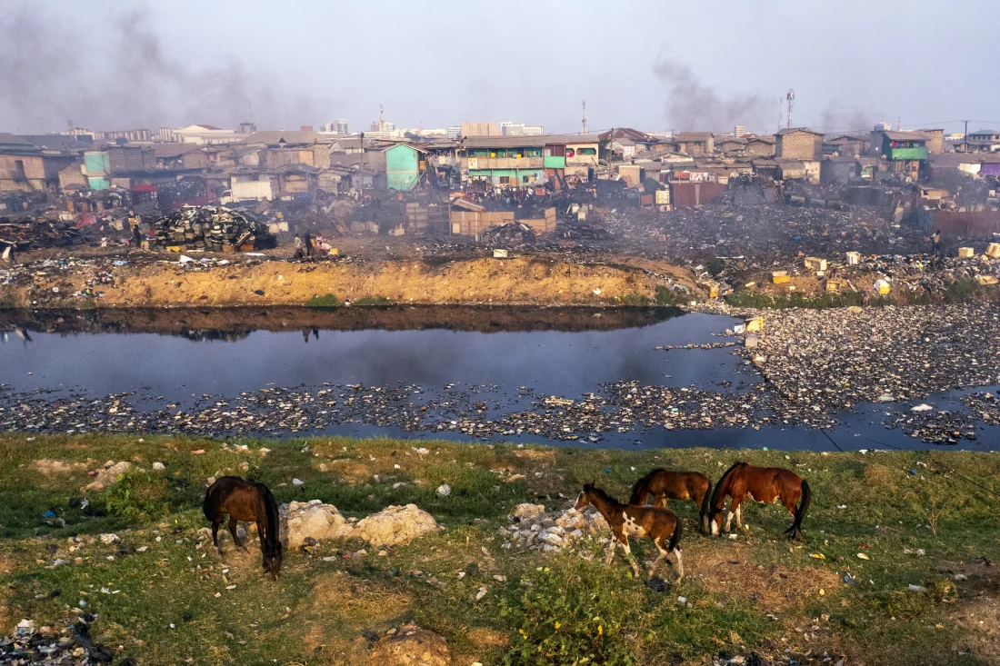
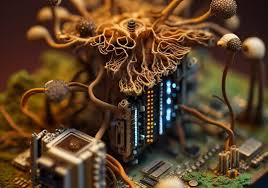
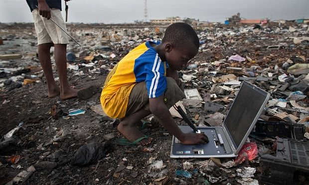
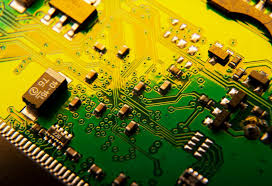
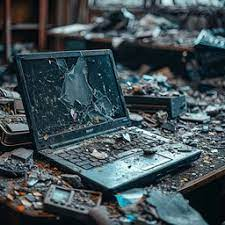

E-waste Dumps
In some countries, e-waste dumps are so large they’re visible from space! For example, the Agbogbloshie dump in Ghana is one of the largest e-waste processing sites in the world.
Learn More
E-Waste Recycling
Recycling e-waste properly helps recover valuable materials and prevent hazardous substances from polluting the environment.
Learn More
Up to 80% of E-Waste is Exported
A significant portion of e-waste from developed countries ends up being shipped to developing nations, especially in Africa and Asia. While some is recycled, much of it is disposed of improperly, leading to severe environmental and health issues.
Learn MoreToxic Chemicals in E-Waste
Improper disposal of e-waste releases dangerous chemicals into the soil and water, affecting ecosystems and human health.
Learn More
E-Waste and Global Impact
Did you know? The amount of e-waste generated globally in 2022 weighed more than all the commercial aircraft ever built combined—over 57 million metric tons!
Learn More
E-Waste Management and Bacteria
Did you know? Certain types of bacteria are being used to extract precious metals from e-waste, such as gold, silver, and copper? One particularly remarkable species, Cupriavidus metallidurans, has the ability to thrive in the presence of toxic heavy metals and can precipitate gold from e-waste, turning it into solid particles that can be easily recovered.
Learn More
People living in E-waste dumpsites
There are dumpsite kids who collect plastic, metal, glass - anything that can be used or sold. Older children can earn upward to $1 each day; the youngest much less. It is a complex situation to save a child from such circumstances. Although the money they earn is little it means survival to their families.
Learn More
E-waste contains gold!
A single tonne of discarded smartphones contains more gold than 17 tonnes of gold ore mined from the earth?
Learn More
E-Waste and Innovations
Did you hear? That e-waste could be a hidden treasure trove for innovators? Researchers are developing new ways to recover precious metals and rare earth elements from discarded electronics—some techniques are even using bacteria to extract gold!
Learn More